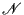
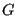
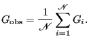
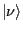
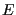
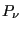
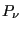
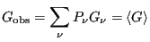
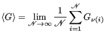
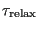

Next: Entropy and Temperature Up: Statistical Mechanics: A Brief Previous: Microstates and Degeneracy
Scientists are taught early on that when conducting measurements, one must perform repeated experiments and average the results. If one makes  independent measurements of some observable , one computes the mean value as
|  | (9) |
Now we have to imagine that our system is evolving in time. As it evolves, its degrees of freedom change values, and the system is thought of as tracing out a trajectory in state space. (“State space” is a Hilbert space spanned by all states
 in the quantum mechanical case, or phase space in the classical case.) How is the system evolving? The system wavefunction evolves according to Schrödinger's equation, while particles in a classical system follow Newtonian mechanics. As the experimenters, we control the system by specifying a handful of variables, such as its total energy, , the number of particles,  , and the volume,
, and the volume,  . These constraints force the system's trajectory to remain in a designated partition of state space.
. These constraints force the system's trajectory to remain in a designated partition of state space.
The key assumption we make at this point is that, if we wait long enough, our system will visit every possible state; that is, the trajectory will eventually pass through every available point in state space consistent with our constraints (that is, all states in the partition). If this is true, and we make
independent observations, then the number of times we observe the system in state  divided by the number of observations,
, is the probability of observing state
divided by the number of observations,
, is the probability of observing state  , , if we happen to make a random observation. So, Eq. 10 above becomes the ensemble average first presented in Eq. 1:
, , if we happen to make a random observation. So, Eq. 10 above becomes the ensemble average first presented in Eq. 1:
|  | (11) |
|  | (12) |
Another important consideration is the following: How far apart must the independent measurements be from one another in time to be considered truly “independent”? To answer this question, we must introduce the notion of a relaxation time, , which arises naturally due to the presumably chaotic nature of the microscopic system. Given some initial conditions, after a time has elapsed, the system has “lost memory” of the initial condition. We measure this loss of memory in terms of correlation functions, which will be discussed in more detail later. If we wait at least between successive observations, we know they are more likely to be independent. It turns out that one can use simulation methods to estimate relaxation times (and their spectra; many systems display a broad spectrum of relaxation times, each element cooresponding to a particular type of molecular motion). We will pay particularly close attention to in upcoming sections.